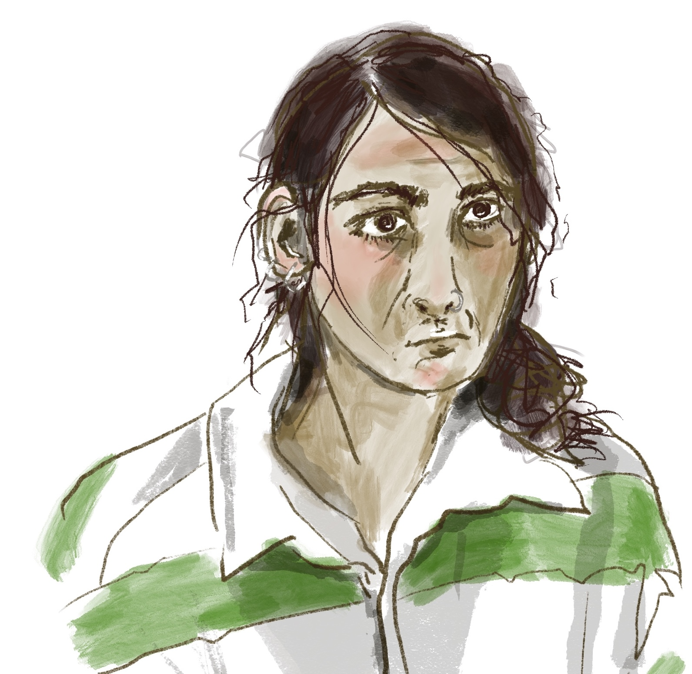
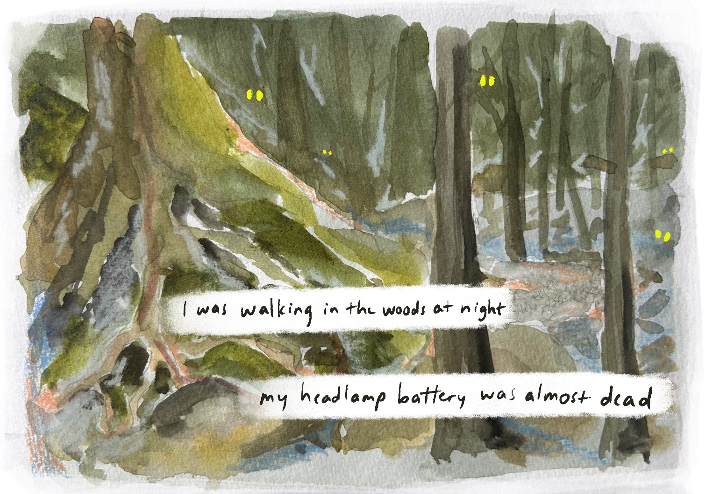
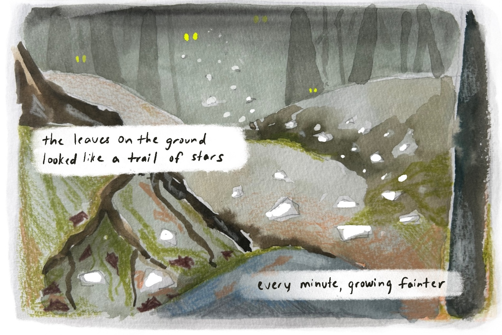

Hi it's me. here's some text about me

What's new?

My climate fiction story "New Niches" was published
in Reckoning, a literary magazine for environmental justice
A metallic buzzing fills the air as we approach. The turbine’s three massive blades, each the height of a five-story building, are spinning quickly today. The sky is cloudless and bright, but it doesn’t do much to change the air of desolation about the place. Even at the start of August, the Labrador Sea is cold and mean.
“You remember the safety briefing?”
“Bad weather, stay inside.”
Order the
ebook
online, or read for free at
reckoning.press
on August 25th.
Comic aspirations


During a several-week stay in northern New Hampshire I created a
series of paintings, which became this short comic, now
published in
The Quarterly.
From August 20th to 26th I will be the
artist in residence
at Mt. St. Helens, an active volcano in the pacific
northwest.
I'll be leading watercolor painting workshops on the
mountain, as well as working on my own art. Stay tuned for
what I produce!